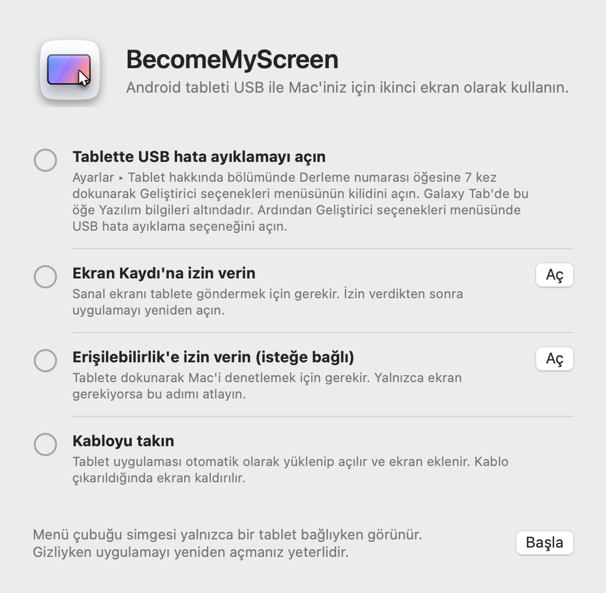
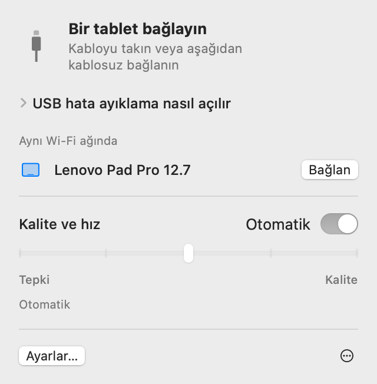
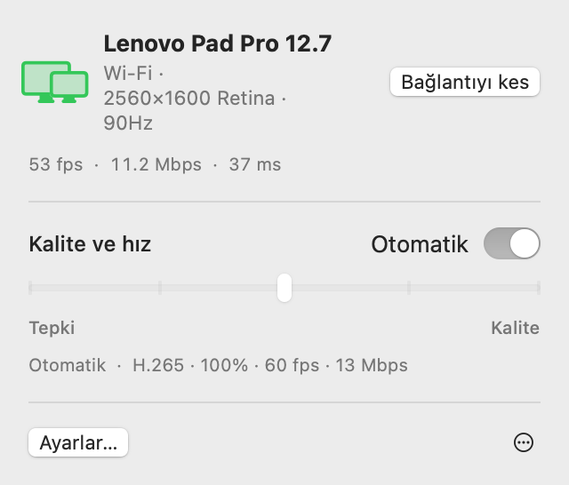
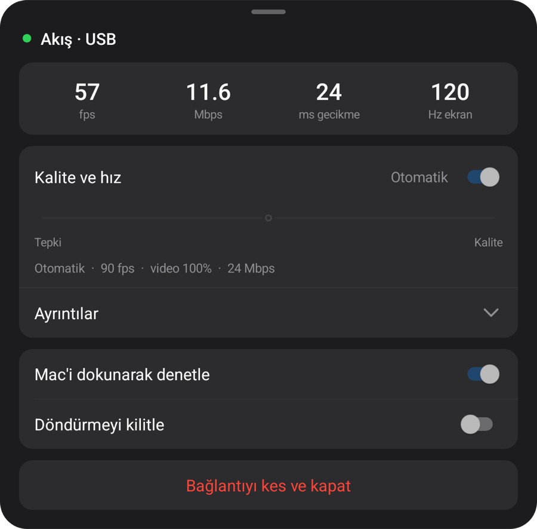
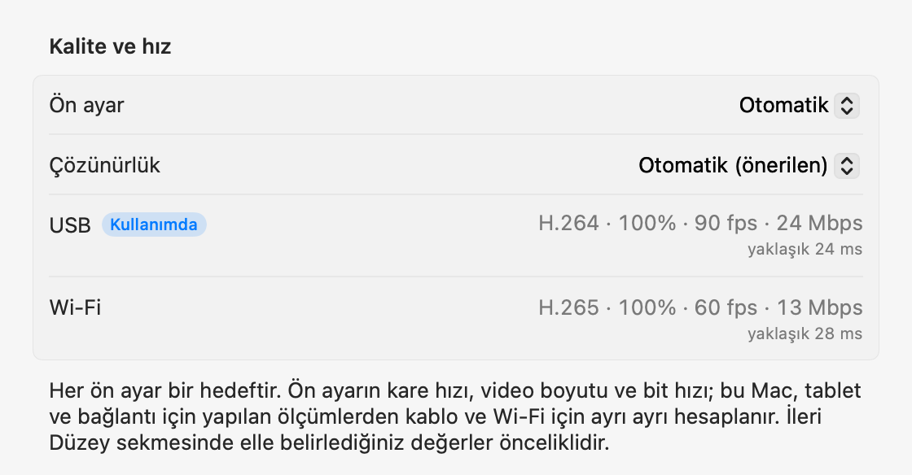

macOS + Windows
Tabletiniz.
Bilgisayarınızın ekranı.
Android tabletinizi Mac veya Windows için ikinci ekran olarak kullanın. USB ile bağladığınızda tablet uygulaması otomatik olarak yüklenir ve açılır.
Zip dosyasını açın, uygulamayı Uygulamalar klasörüne taşıyın ve açın. İlk bağlantı için Kurulum bölümüne bakın.
Mac veya Windows uygulamasını indirmek için bu sayfayı bilgisayarınızda açın.

1.1.0
Windows
Artık Windows 11’de. Tek indirmede Intel/AMD x64 ve ARM64 için yerel uygulamalar.

Yükleyiciyi çalıştırın, tableti bağlayın ve USB hata ayıklamasına izin verin. Video motoru ilk açılışta indirilir.
Aşağıdaki ölçümler Mac üzerinde yapıldı.
Kurulum
Kurulumu yalnızca bir kez yaparsınız. Sonrasında kabloyu takmak ekranı ekler; aynı Wi‑Fi ağında ise kablo olmadan bağlanır.
-
Mac uygulamasını yükleyin
İndirilen zip dosyasını açın, BecomeMyScreen'i Uygulamalar klasörüne taşıyın ve açın. Ekran Kaydı'na izin verin, ardından uygulamayı bir kez daha açın.
-
Tablette USB hata ayıklamayı açın
Ayarlar › Tablet hakkında bölümünde Derleme numarası öğesine yedi kez dokunarak Geliştirici seçenekleri menüsünün kilidini açın. Galaxy Tab'de bu öğe Yazılım bilgileri altındadır. Ardından Geliştirici seçenekleri menüsünde USB hata ayıklama seçeneğini açın.
-
Kabloyu takın
Tablet USB hata ayıklamaya izin verilip verilmeyeceğini sorduğunda “Bu bilgisayardan her zaman izin ver” seçeneğini işaretleyin ve “İzin ver” düğmesine dokunun. Mac tablet uygulamasını yükleyip açar, ardından ekranı ekler. Ayrıca indirilecek bir tablet uygulaması yoktur.

Hız
Mac'in ekranı yakaladığı andan tabletin onu çizdiği ana kadar geçen süre. Lenovo Pad Pro 12.7 ve M4 Pro çipli bir Mac ile ölçüldü.
| Video boyutu | 60 fps | 120 fps |
|---|---|---|
| 100%2560×1600 | 20 ms | 24 ms |
| 75%1920×1200 | 14 ms | 19 ms |
| 50%1280×800 | 11 ms | 16 ms |
Apple Silicon'daki donanım kodlayıcı ekranı H.264 olarak sıkıştırıp USB üzerinden gönderir; tabletin donanım kod çözücüsü de her kareyi geldiği anda çizer. İlk bağlantıda Otomatik, kod çözücünün ne kadarını kaldırabildiğini ölçer ve geride kalmayan en yüksek kare hızını seçer. Bu tablette 90 fps'yi seçti.
Ölçüm yöntemi: İki aygıtın saatleri arasındaki fark düzeltildikten sonra, Mac'in bir kareyi yakalaması ile tabletin o kareyi çizmesi arasındaki süreyi ölçtük.
Kablosuz
Bir kez USB ile bağlanan tablet, aynı Wi‑Fi ağında kablosuz da çalışır. Çalışırken kabloyu çıkarın, görüntü Wi‑Fi üzerinden devam etsin.
- Bağlanma
- Tablette uygulamayı açın; tablet, Mac menü çubuğundaki “Aynı Wi‑Fi ağında” listesinde görünür. Bağlan düğmesini tıklayın, görüntü gelir.
- Kabloyu çıkarma
- Bir saniye içinde Wi‑Fi'a geçer. Sanal ekran ve pencere düzeniniz olduğu gibi kalır; kabloyu yeniden takınca USB'ye döner.
- Güvenlik
- Kablosuz bağlantıların anahtarı yalnızca USB kablosu üzerinden paylaşılır. Bağlantı ancak anahtar doğrulandıktan sonra kurulur; görüntü ve girişlerin tamamı AES-256-GCM ile şifrelenir.
- Uyarlanabilir hız
- Tablet aldığı her kareyi onaylar; Mac ise geride kaldığı kadar kareyi atlar ve bit hızını ayarlar. Wi‑Fi bir anlığına yavaşlasa bile gecikme birikmez.


| Bağlantı | Gecikme | Notlar |
|---|---|---|
| USB | Yaklaşık 20–25 ms | Tabletin maksimum kare hızı |
| Wi‑Fi 5 GHz | 40–55 ms | 60 fps; bit hızı kalite ayarına kadar otomatik olarak yükselir |
| Wi‑Fi 2.4 GHz | 40–65 ms | Gecikme ara sıra 100 ms'nin üzerine çıkar, bu da takılma gibi görünebilir |
Lenovo Pad Pro 12.7 ile 2560×1600 çözünürlükte, sürekli değişen içerikle ölçüldü. Tablet 2,4 GHz Wi‑Fi ağındaysa uygulama 5 GHz'e geçmeyi önerir.
Kalite ve tepki
Beş seviyeden birini seçin veya Otomatik'te bırakın. Mac menü çubuğundan ya da tablet menüsünden değiştirin; iki taraf birlikte değişir.
| Ön ayar | Kare hızı | Video boyutu | Bit hızı |
|---|---|---|---|
| Otomatik | 90 fps | 100% | 24 Mbps |
| 1En hızlı tepki | 120 fps | 50% | 8 Mbps |
| 2Hızlı tepki | 120 fps | 75% | 14 Mbps |
| 3Dengeli | 90 fps | 100% | 24 Mbps |
| 4Yüksek kalite | 90 fps | 100% | 33 Mbps |
| 5En iyi kalite | 60 fps | 100% | 39 Mbps |
M4 Pro çipli bir Mac'te, USB üzerinden Lenovo Pad Pro 12.7 (2560×1600, 120 Hz) ile ölçüldü. Her ön ayar bir hedeftir: Başka bir Mac'te veya tablette ve Wi‑Fi üzerinden, ölçüm sonuçlarına göre kendi değerlerini hesaplar. Otomatik, Dengeli ile aynıdır.
Video boyutu, Mac'in gördüğü çözünürlükten ayrı olarak belirlenir. Daha küçük bir video da tablet ekranını doldurur; kod çözücünün yükünü hafifletir ve gecikmeyi buna göre azaltır.
İlk bağlantıda uygulama, yaklaşık 10 saniyede kabloyu, bu Mac'in video kodlayıcısını ve tabletin kod çözücüsünü her modunda ölçer; tablet Wi‑Fi üzerinden ilk kez bağlandığında ise ağı ölçer. Her ön ayar bu değerlere kablo ve Wi‑Fi için ayrı ayrı uyarlanır; İleri Düzey ayarlarında her bağlantı için istediğiniz değeri elle belirleyebilirsiniz. Kablo yavaşsa değiştirmeniz söylenir.


Dokunma
Tablete dokunun, Mac bunu fare girişi olarak alır. Mac'te Erişilebilirlik'e izin verdiğinizde açılır.
| Tablette | Mac'te |
|---|---|
| Dokunma | Tıklama |
| Sürükleme | Sürükleme |
| İki parmakla sürükleme | Kaydırma |
| İki parmakla dokunma | Sağ tıklama |
| Üç parmakla dokunma | Tablet menüsünü açar |
| Kalemle çizme | Mac'e basınç ve eğimle birlikte grafik tablet girişi olarak ulaşır |
| Kalemi veya fareyi ekranın üzerinde tutma | İmleci hareket ettirir. Kalem düğmesini basılı tutarak dokunmak sağ tıklar |
Eski yerine dönen imleç
Tablete dokunduğunuzda Mac'in imleci o noktaya gider. Ardından fareyi biraz hareket ettirirseniz imleç dokunmadan önceki yerine döner; böylece ana ekranda yaptığınız işe imleci geri sürüklemeniz gerekmez. Bunu Ayarlar'da kapatabilirsiniz.
Ayrıntılar
- Menü çubuğu simgesi
-
Yalnızca bir tablet bağlıyken görünür. Gizliyken uygulamayı yeniden açarsanız paneli açık olarak kısa süreliğine görünür.
- Bekliyor
- Hazırlanıyor
- Kullanımda
- Dikkat gerekiyor
- Tablet uygulamasını açma
- Kabloyu taktığınızda tablet uygulaması çalışmıyorsa Mac onu açar, ekran kapalıysa uyandırır. Kilit ekranını asla atlamaz.
- Güncellemeler
- Mac uygulaması yeni sürümleri denetler ve siz seçtiğinizde kendini günceller. Daha yeni bir tablet uygulaması getirirse, ekran başlamadan önce tablet kablo üzerinden güncellenir.
- Dikey
- Tableti dikey konuma çevirin, sanal ekran da dikey olarak yeniden oluşturulur.
- Yenileme hızı ve ekran zaman aşımı
- Akış sırasında tabletin yenileme hızı 60 Hz'e düşmemesi için sabit tutulur ve ekran kapanmaz.
- Kablo kontrolü
- USB 480 Mbps'nin altında bağlanırsa, aktarım hızı 8 MB/s'nin altında kalırsa veya bağlantı üç dakika içinde üç kez kesilirse uygulama başka bir kablo ya da bağlantı noktası denemenizi önerir.
- Bağlantı kesildiğinde
- Kablo çıkarsa görüntü Wi‑Fi üzerinden devam eder. Kablosuz devam edemiyorsa sanal ekran kısa bir süre korunur; tablet bu sürede yeniden bağlanırsa pencere düzeniniz olduğu gibi devam eder.
- Bağlantıyı kes ve Yeniden bağlan
- Menü çubuğunda Bağlantıyı kes düğmesini tıklarsanız kablo takılı olsa bile tabletin ekranı bir kenara bırakılır. Devam etmek için Yeniden bağlan düğmesini tıklayın.
- Tablet uygulaması kendiliğinden kapanır
- Tablete şarj aleti dahil hiçbir şey takılı değilse tablet uygulaması 10 saniye sonra kendiliğinden kapanır. Bunun yerine kablosuz bağlantı bekleyebiliyorsa 2 dakika bekler.
Gereksinimler
- Mac
- Apple Silicon çipli Mac, macOS 14 veya sonrası
- Windows
- Windows 11 · Intel / AMD x64 · ARM64 · Windows
- Tablet
- Android 8.0 veya sonrası; USB hata ayıklamanın açılabildiği bir aygıtta
- Kablo
- Veri aktarımını destekleyen bir USB kablosu. Yalnızca şarj kabloları bağlanmaz. Mac'in kendi bağlantı noktası, hub'a göre daha güvenilirdir.
- Kablosuz
- Mac ve tablet aynı Wi‑Fi ağında olmalıdır; 5 GHz önerilir. İlk bağlantı USB ile yapılmalıdır.
- Mac izinleri
- Ekran Kaydı. Ayrıca Mac'i dokunarak denetlemek için Erişilebilirlik, kablosuz kullanmak için Yerel Ağ.
Sık sorulan sorular
Windows
Windows ARM64 sürücüyü engellerse ekranı yansıtmak için ZIP içindeki Start-Mirroring.cmd dosyasını çalıştırın. Sürüm notları ve bilinen sınırlar
Tablete uygulama yüklemem gerekiyor mu?
Hayır. Tablet uygulaması Mac uygulamasının içinde gelir; kabloyu taktığınızda Mac onu yükleyip açar. Mac uygulamasını güncellediğinizde tablet uygulaması da bir sonraki bağlantıda onunla birlikte güncellenir.
Wi‑Fi üzerinden çalışıyor mu?
Evet. Bir kez USB ile bağladıktan sonra artık aynı Wi‑Fi ağında kablosuz bağlanır. Tablette uygulamayı açıp Mac menü çubuğunda Bağlan düğmesini tıklayın ya da kullanırken kabloyu çıkarmanız yeterli. Gecikme USB'ye göre biraz daha yüksektir (5 GHz'te 40–55 ms) ve 2,4 GHz Wi‑Fi zaman zaman takılabilir; bu nedenle 5 GHz önerilir.
İlk bağlantı neden USB ile yapılmalı?
Çünkü kablosuz bağlantıların anahtarı yalnızca kablo üzerinden paylaşılır. Böylece aynı Wi‑Fi ağındaki başka bir aygıt tabletiniz gibi davranıp Mac'inize bağlanamaz. Tablet uygulaması da bu sırada yüklenir.
Kalem basıncı çalışıyor mu?
Evet. Kalem basıncı ve eğimi macOS'e grafik tablet girişi (basınç, eğim ve yakınlık) olarak ulaşır. Android'in standart kalem girişini kullandığı için S Pen ve Lenovo kalemleri ek bir SDK veya sürücü gerektirmez. Lenovo Pad Pro 12.7'nin kalemiyle test edildi.
Hangi tabletlerle çalışır?
Android 8.0 veya sonrasını çalıştıran ve USB hata ayıklamanın açılabildiği her tabletle. Geliştirme ve ölçümler Lenovo Pad Pro 12.7 (2944×1840, 120 Hz) üzerinde yapıldı; diğer aygıtlar henüz bizzat test edilmedi. Sanal ekranın çözünürlüğü ve yönü, bağlantı sırasında tablet ekranına göre belirlenir.
Neden App Store'da değil?
Sanal ekranı oluşturmak macOS'in özel bir özelliğine dayandığından uygulama App Store'da yayımlanamaz. Bunun yerine Apple geliştirici sertifikasıyla imzalanmış ve Apple tarafından noter onayından geçirilmiştir; bu sayede indirdikten hemen sonra açılır.
Neden Ekran Kaydı ve Erişilebilirlik gerekiyor?
Ekran Kaydı tablete gönderilecek sanal ekranı yakalar, Erişilebilirlik tabletteki dokunuşları ve kalemi Mac girişine dönüştürür, Yerel Ağ ise aynı Wi‑Fi ağındaki tabletleri bulur. Görüntü yalnızca USB kablosu üzerinden veya Wi‑Fi ağınızın içinde iletilir (kablosuzken şifrelenir) ve asla internete çıkmaz.
Bağlantı sürekli kesiliyor.
Veri aktarımını destekleyen başka bir kablo deneyin veya hub yerine doğrudan Mac'teki bir bağlantı noktasına takın. USB yavaş bağlandığında veya sık sık kesildiğinde uygulama sizi önceden uyarır. Kısa bir kesintiden sonra sanal ekran 15 saniye korunur ve kaldığı yerden devam eder.
Tablet kilitliyse ne olur?
Mac ekranı uyandırır ve uygulamayı açar, ancak kilidi asla atlamaz. PIN veya deseninizle kilidi açın, hemen bağlanır.
Intel işlemcili Mac'lerde çalışır mı?
Geçerli sürüm yalnızca Apple Silicon çipli Mac'ler içindir.
İndir
Mac veya Windows uygulamasını indirmek için bu sayfayı bilgisayarınızda açın.
Zip dosyasını açın, uygulamayı Uygulamalar klasörüne taşıyın ve açın. İlk bağlantı için Kurulum bölümüne bakın.